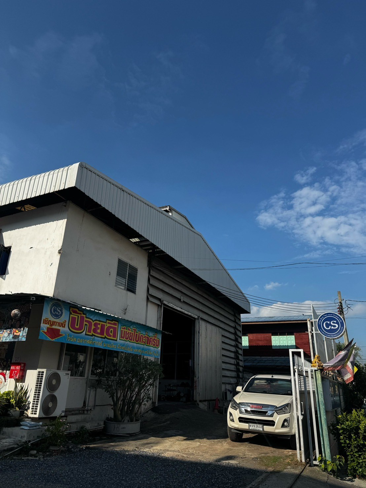

ผลิตตามมาตรฐาน
ส่งมอบตรงเวลา
พร้อมให้คำปรึกษา
ทุกอุตสาหกรรม
ประสบการณ์กว่า 20 ปี ดูแลครบวงจร ตั้งแต่ออกแบบ
ผลิตจนถึงติดตั้งป้ายความปลอดภัยตามมาตรฐาน
อัปเดตล่าสุดจาก CS.SIGN
โปรโมชั่น สินค้าใหม่ และข่าวสาร ที่อัปเดตโดยแอดมินทุกครั้งที่มีเรื่องใหม่
เร็วๆ นี้
CS.SIGN เราเชี่ยวชาญด้านใด
เราคือผู้เชี่ยวชาญด้านป้ายความปลอดภัยและป้ายจราจรแบบครบวงจรผสาน
ประสบการณ์ตรงในอุตสาหกรรมมากกว่า 20 ปี เข้ากับทีมงานผลิตและติดตั้ง
ที่พร้อมลงพื้นที่จริง เพื่อส่งมอบป้ายที่ตรงตามมาตรฐาน มอก. และ ISO 7010
ให้กับองค์กรได้ในเวลาที่เหมาะสม พร้อมให้คำปรึกษาเชิงเทคนิคเพื่อวางแผน
ป้ายที่เหมาะกับหน้างานของคุณอย่างยั่งยืน

พร้อมส่งมอบงานจริง
บริการของเรา
ผลิตป้าย
ผลิตป้ายด้วยเครื่องมือได้มาตรฐาน ใส่ใจทุกรายละเอียดของชิ้นงาน งานเร็ว งานดี
ติดตั้งป้าย
ดำเนินการติดตั้งป้าย โดยทีมงานมืออาชีพและชำนาญการที่มีประสบการณ์มากกว่า 20 ปี
ออกแบบ-ให้คำปรึกษา
ออกแบบป้ายให้เหมาะสมกับหน้างาน เลือกวัสดุและวิธีการติดตั้งที่เหมาะสมตรงตาม Concept ของลูกค้า
ดูหน้างาน-ประเมินราคา
สำรวจหน้างานก่อนทำแบบผลิตและติดตั้งป้าย เพื่อให้ถูกต้องและเหมาะสมกับหน้างานจริง
ขอใบเสนอราคา
สามารถขอใบเสนอราคาและประเมินราคาป้ายเบื้องต้น เพื่อใช้ประกอบการพิจารณา
ประสบการณ์จริง พร้อมทีมที่ส่งมอบได้ครบ
ผลิตตามมาตรฐาน มอก. และ ISO 7010 พร้อมทีมงานที่ดูแลครบทุกขั้นตอน
นี่คือเหตุผลที่องค์กรไว้วางใจให้เราดูแลป้ายความปลอดภัยของพวกเขา
ประสบการณ์กว่า 20 ปี
ผลิตป้ายอุตสาหกรรมและความปลอดภัยมาอย่างยาวนาน ผ่านงานจริงหลากหลายอุตสาหกรรม
ครบคลุมทุกบริการ
ให้คำปรึกษา ออกแบบ ผลิต ติดตั้ง ครบวงจรในที่เดียว ไม่ต้องผ่านคนกลาง
ทีมงานมืออาชีพ
ผู้เชี่ยวชาญดูแลทุกขั้นตอน ตั้งแต่ออกแบบ ผลิต จนถึงติดตั้งหน้างาน
ออกแบบตาม Requirement
ป้ายที่ตรงกับมาตรฐานอุตสาหกรรมและความต้องการของลูกค้าแต่ละราย
ให้คำปรึกษาฟรี
ช่วยประเมินความเสี่ยงและวางแผนเลือกวัสดุ สัญลักษณ์ สี ก่อนเริ่มผลิต
Support 24 ชั่วโมง
ทีมงานพร้อมตอบกลับและเสนอราคาให้รวดเร็ว พร้อมดูแลหลังการขาย
รับประกันสินค้า 6 เดือน
ป้ายทุกชิ้นที่ผลิตโดย CS.SIGN รับประกันคุณภาพวัสดุและงานผลิต 6 เดือนหลังส่งมอบ ครอบคลุมกรณีชำรุดจากขั้นตอนการผลิต
ตัวอย่างสินค้าที่ลูกค้าไว้วางใจ
คัดสรรสินค้าคุณภาพที่ได้รับความนิยม พร้อมอัปเดตรายการแนะนำอย่างสม่ำเสมอ
ชมวิดีโอแนะนำสินค้าของเรา
ทำความรู้จักป้ายและขั้นตอนงานของ CS.SIGN แบบเห็นภาพจริงในคลิปสั้นๆ เลื่อนดูได้หลายคลิป
รออัพเดตเร็วๆ นี้
ตัวอย่างผลงานของเรา
รวมโปรเจกต์ที่เป็นตัวอย่างเด่น คลิกที่รูปเพื่อดูรายละเอียดและภาพเพิ่มเติมของแต่ละผลงาน
ประสบการณ์ร่วมงานกับธุรกิจชั้นนำ
ข่าวสารและบทความ
ความรู้และมาตรฐานป้ายความปลอดภัยล่าสุด อัปเดตสม่ำเสมอโดยทีมผู้เชี่ยวชาญ CS.SIGN
ตามกฎหมายไทย
มาตรฐานป้ายความปลอดภัยที่กฎหมายไทยบังคับ ผู้ประกอบการต้องรู้อะไรบ้าง
สรุปกฎหมายและมาตรฐานหลักที่เกี่ยวข้องกับป้ายความปลอดภัยในสถานประกอบการไทย ตั้งแต่ พ.ร.บ. ความปลอดภัยฯ มอก. 635-2547 ไปจนถึง ISO 7010
ให้เหมาะกับหน้างาน
วิธีเลือกวัสดุป้ายจราจรให้ทนแดดทนฝนในไทย: PVC, อะคริลิก หรือสติกเกอร์สะท้อนแสง
เปรียบเทียบข้อดีข้อเสียของวัสดุป้ายแต่ละประเภท พร้อมคำแนะนำในการเลือกใช้ตามสภาพหน้างานจริง
ISO 7010 คืออะไร และทำไมโรงงานส่งออกถึงต้องใช้สัญลักษณ์มาตรฐานนี้
ทำความเข้าใจที่มาของสัญลักษณ์ความปลอดภัยสากล และความแตกต่างจากมาตรฐาน มอก. ที่ใช้ในประเทศไทย